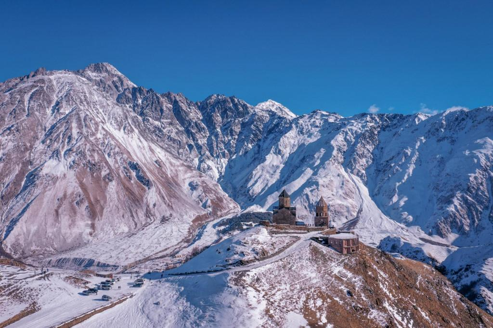
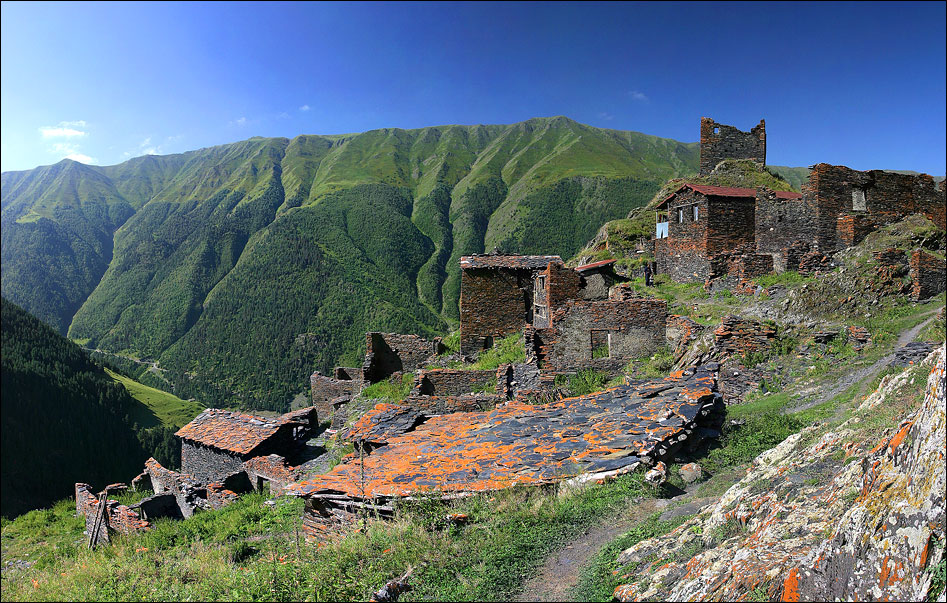
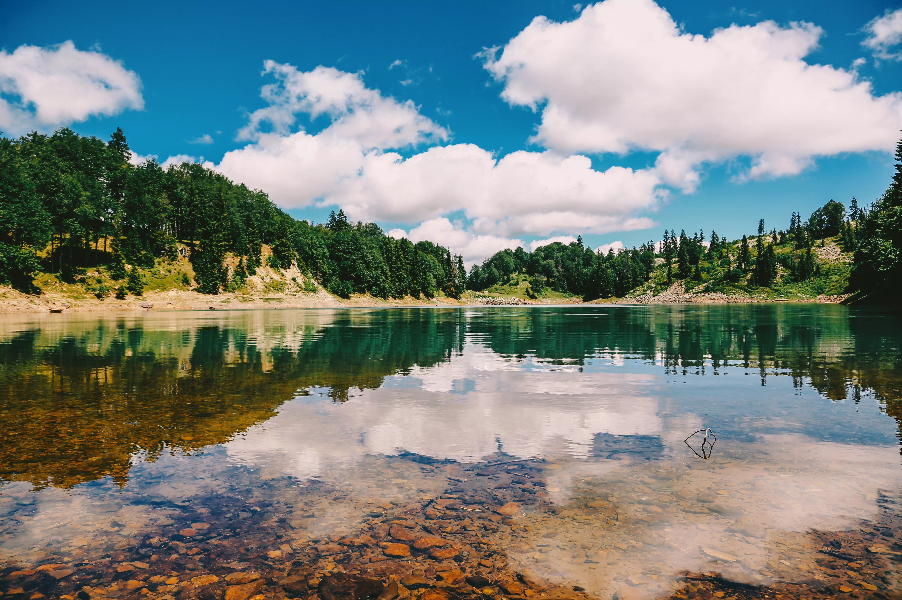
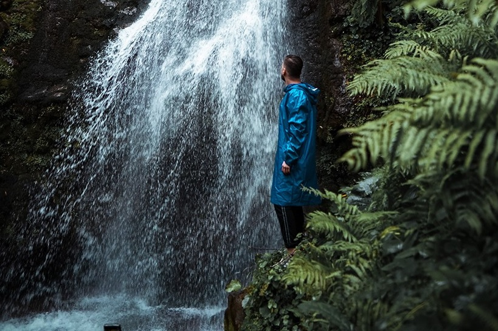
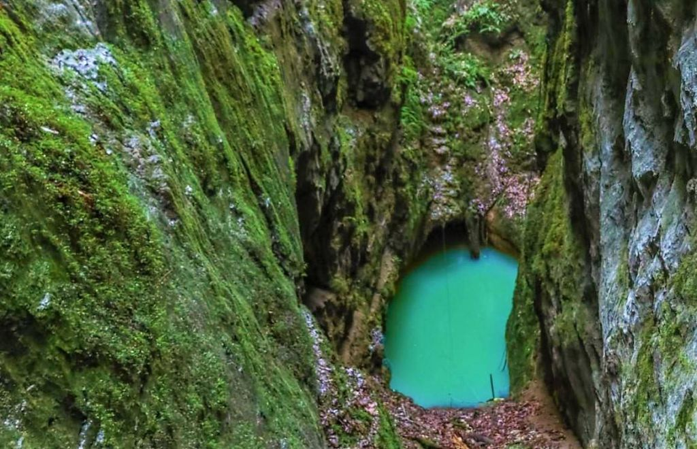

ყაზბეგი
გერგეთის მყინვარი
წმინდა სამება ეკლესიიდან მყინვარის ძირამდე, კლასიკური ერთდღიანი მარშრუტი.

წმინდა სამება ეკლესიიდან მყინვარის ძირამდე, კლასიკური ერთდღიანი მარშრუტი.

ქორულდის ტბები მესტიიდან 9 კილომეტრის მოშორებით 2740 მეტრზე მდებარეობს.

მრავალდღიანი ლაშქრობა ომალოდან შატილში.

კიდევ ერთი ტბა, რომელიც სილამაზითაც გამოირჩევა და ველური ბუნებისა და ლაშქრობის მოყვარულებისთვისაც საინტერესო დანიშნულების ადგილია

ყველაზე წვიმიანი ეროვნული პარკი ევროპაში — სუბტროპიკული ტყის ბილიკი.

წყალტუბოს მუნიციპალიტეტში, სოფელ ყუმისთავში უჩვეულო ბუნების ძეგლი, გაბზარული ტბა მდებარეობს.